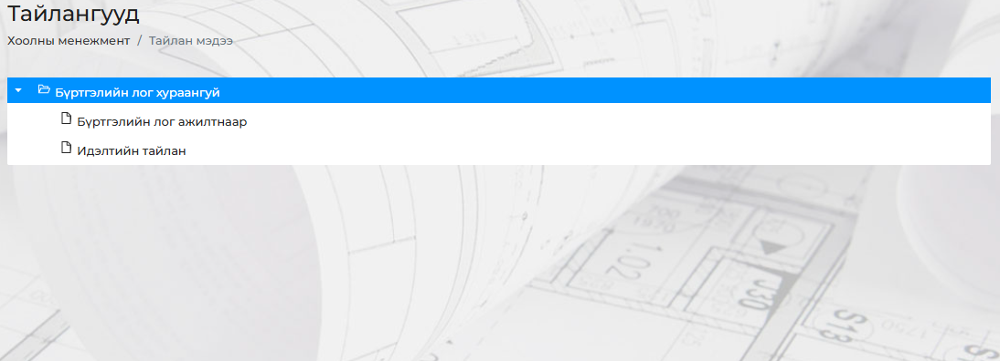
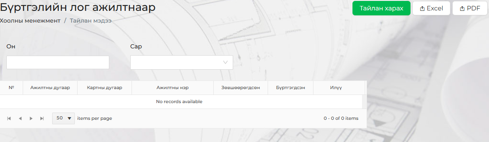
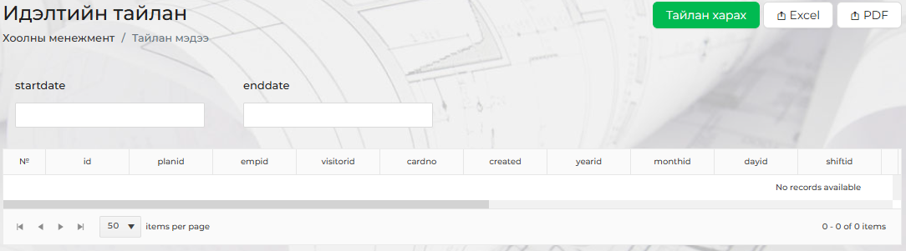

<h2 style="background-color: skyblue;">Хэрхэн ажилтан нэмэх вэ?</h2>
<p><div style="display: flex; justify-content: center; align-items: center;">
    
</div>
<br>Ажилчдын хоолонд орсон бүртгэлийн тайлан.</br>
<br><div style="display: flex; justify-content: center; align-items: center;">
    
</div></br>
<br><div style="display: flex; justify-content: center; align-items: center;">
    
</div></br>
</p>